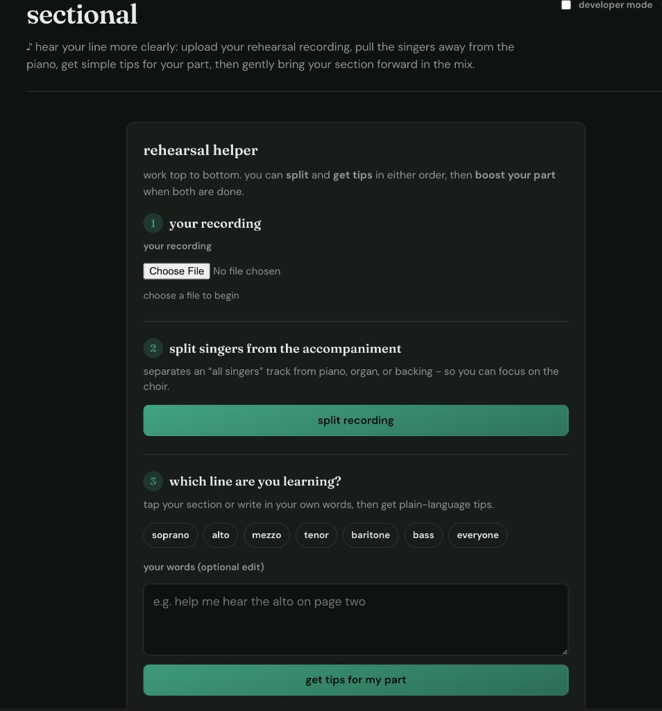

I turn ideas into code. Full-stack engineer building modern applications with React, TypeScript, Node.js, and AI/ML - from concept to deployment.
Oracle • January 2026
Certified in Oracle Cloud Generative AI, demonstrating expertise in generative AI solutions, cloud infrastructure, and AI-powered applications.
UC Santa Barbara • November 2025
Completed intensive software engineering program covering modern development practices, tools, and methodologies.

IN PROGRESSA practice tool for choirs and a cappella groups. Upload a rehearsal recording, pick your voice part, and hear your line brought forward in the mix. Powered by stem separation, an LLM for natural-language part requests, and frequency-domain post-processing.
Co-founded an AI-powered fashion chatbot using Python and TensorFlow with multi-stage validation and filtering before surfacing recommendations - improving accuracy by 35% and cutting bad recommendations by 40%. Tuned system prompts against real user conversations to handle edge cases and ambiguous style requests, reducing user search time by 20%.
Developed a mobile application for a nonprofit wildlife organization, enabling efficient logging and tracking of service hours for volunteer management. Built with a focus on user experience and data accuracy.
Built a Chrome extension that intercepts user prompts to LLMs and surfaces real-time quality analysis - flagging vagueness, risk levels, and missing context before the prompt is sent. Designed an in-tab UI that shows actionable fix suggestions so users can strengthen their prompts without breaking their workflow.
Built a full-stack Q&A forum with threaded discussions, moderation tools, and role-based permissions - handling auth with bcrypt-hashed sessions and real-time input validation for the frontend.
Eleven years in choirs taught me one thing: rehearsal recordings are useless. The basses overpower the altos, the sopranos overpower everyone, you can't isolate your part, and by measure twelve, you've lost your place. I spent a year as an Isang Himig intern wrangling sheet music in MuseScore, another year leading the alto section - trying to teach music my section could barely hear on the reference track. Sectional is what happens when that singer finally learns Flask, Demucs, and the Claude API.
September 2023 - June 2025
February 2026 - Present